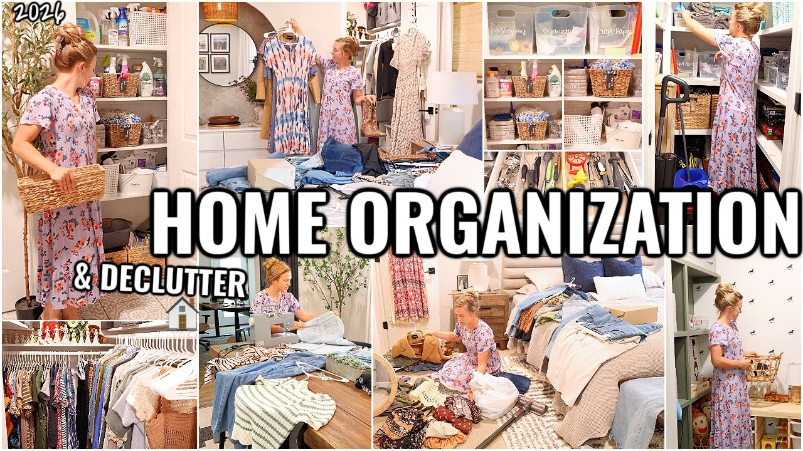
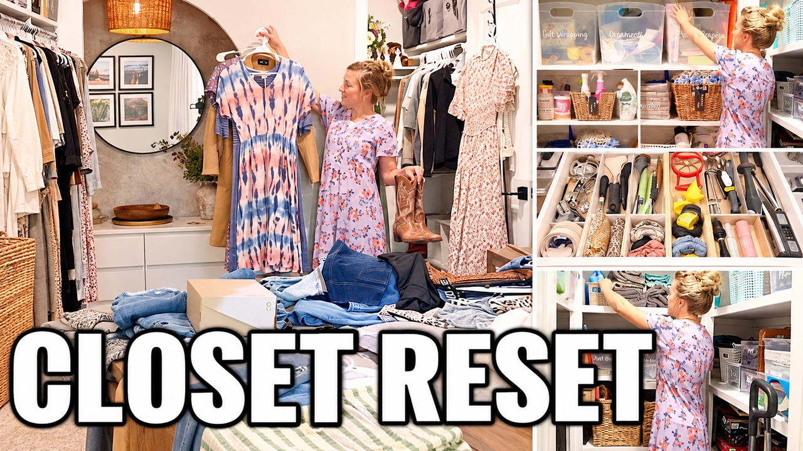

20:00HOME ORGANIZATION IDEAS!!😍 CLEAN & ORGANIZE WITH ME | DECLUTTERING AND ORGANIZING MOTIVATION
Hannah's Happy Home

20:00Closet Decluttering & Home Organization | Clean & Organize With Me
Hannah's Happy Home
The hook: Give this organizing session a specific starting point: the closet.
This upload has 0.71x reach and 49.0% at halfway, 3.5 points above its runtime peers. The existing nine-scene collage sells variety, but the title repeats the channel's usual wording. The description explicitly names closet sorting; make that task the entry point.
Evidence & content check
What supports the promise: Public description names closet sorting, decluttering and organizing. Stored diagnostics show a strong opening and a replay peak at the drawer-divider walkthrough (13:12).
Content check: Keep the scope to this session. No entire-house purge, item count or promise of a permanent clutter-free home.
Measures: 83,195 public lifetime views on 13 October 2026; 71,026 stored first-28-day views; 0.71x relative reach. Halfway retention 49.0%, against 45.5% for this runtime band. Stored fields are historical; source regeneration is not a new Studio pull.
Before testing: confirm the opening delivers the package, verify reconstructed visual details against the video, and inspect current impressions, traffic mix, CTR and retention. The proposed thumbnail is a concept for review.